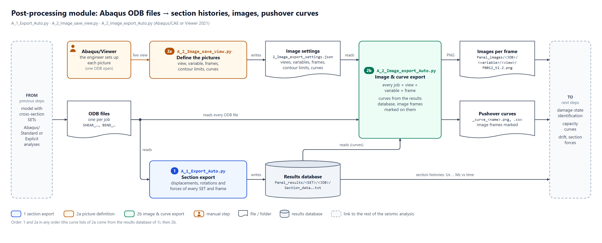
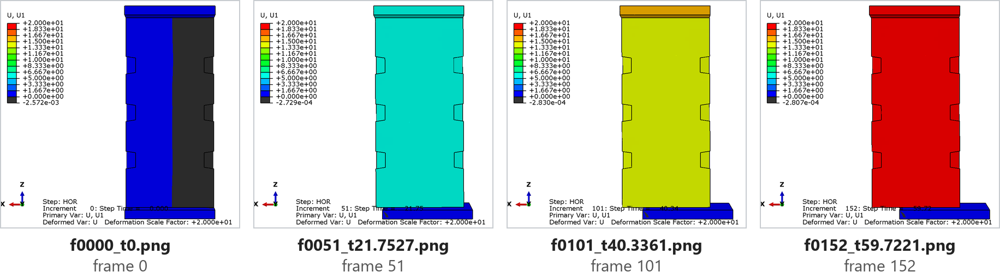
| Repository | github.com/RomanJasen/Abaqus-scripts-for-output-processing |
| Scripts | Abaqus/CAE and Abaqus/Viewer 2021 (Python 2.7), Windows 10 |
| Example | masonry wall benchmark with 16 cross-sections (implicit and explicit pushover analyses) |
| Version | November 2026 |
The scripts automate a numerical (seismic, pushover) analysis of structures modelled with volumetric (solid) or shell elements in Abaqus: the model is prepared once, many analyses are run automatically, and the forces and displacements of chosen cross-sections, pictures of the results and pushover curves are exported for every analysis. They were developed for masonry walls and buildings, but work wherever section forces and displacements are needed.
| Step | Folder → script(s) | What it does |
|---|---|---|
| 1 | 1_model_preparationprepare_model_for_export.py |
checks the cross-section SETs of the model (chapter 1) |
| 2 | 2_run_analysesrun_pushover_jobs.py, run_parameter_study.py |
runs the pushover analyses of the chosen models, or a parameter study (chapter 2) |
| 3 | 3_export_and_image_exportA_1_Export_Auto.py |
displacements, rotations and forces of every cross-section and frame → results database (chapter 3) |
| 4 | 3_export_and_image_exportA_2_Image_save_view.py, A_2_Image_export_Auto.py |
pictures defined once in Abaqus/Viewer and printed for every analysis and frame; pushover curves with the frames of the pictures marked (chapters 4 and 5) |
INPUT, each with a
comment. Most scripts also show a dialog with the same settings before they start.1_Export_Auto_settings.json
and 2_Image_export_settings.json next to the scripts. A change in the dialog, in the JSON file or
in the INPUT block is used; the latest change wins. Delete the JSON file to go back to the INPUT block.*_log.txt file. Abaqus often shows the messages of a script
only when it has finished; open the log file to see how far a long run is.A_ into it (chapter 3.1).All figures come from the benchmark model of the repository's videos: a masonry wall
(PANEL_S-1, 1200 × 2600 × 150 mm, C3D8R elements of about 50 mm) between a
bottom beam and a top loading beam, with 16 cross-section SETs. The pictures, the results database and the curves
of chapters 3–5 were produced by the scripts of this repository on the implicit analysis
SHEAR_key_S_FR05_FORCE_34272 (vertical force 34.3 kN, pushover to 20 mm); one curve comes from
the explicit analysis SHEAR_KEY_S_FR05_EX_172699.
A cross-section is a cut through the model at which the forces and displacements are wanted, for example the bottom and the top of a pier. For the scripts it is an assembly-level SET that contains
both under the same name. Figure 1 shows such a SET of the benchmark wall.
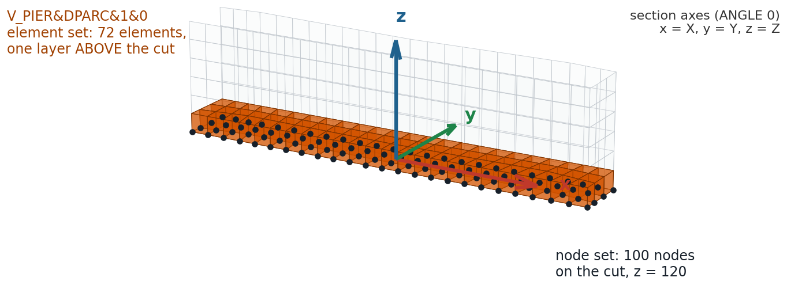
V_PIER&DPARC&1&0 at the bottom of the wall: the node set holds the
100 nodes of the cut (z = 120 mm, black dots), the element set the 72 elements of the layer above it
(orange). The bottom beam below the cut is not part of the SET. Arrows: the section axes for ANGLE 0.The name of a SET tells the scripts how to treat it. It has four parts separated by &:
| TYPE | geometry | section axes | forces | use |
|---|---|---|---|---|
V_PIER, V_SPEC | solid elements | pier | yes | horizontal cuts of walls and piers |
S_PIER | shell (line of nodes) | pier | yes | the same in shell models |
V_SPANDREL, S_SPANDREL | solid / shell | spandrel | yes | vertical cuts of spandrels and beams |
S_DRIFT | point (node average) | global | no | storey displacements (drift) |
SRIFT | solid elements | pier | no | displacements and rotations only |
& characters.PIER, SPEC, SPANDREL,
DRIFT or SRIFT are exported; all other sets of the model are ignored. Helper sets
must therefore not contain these words.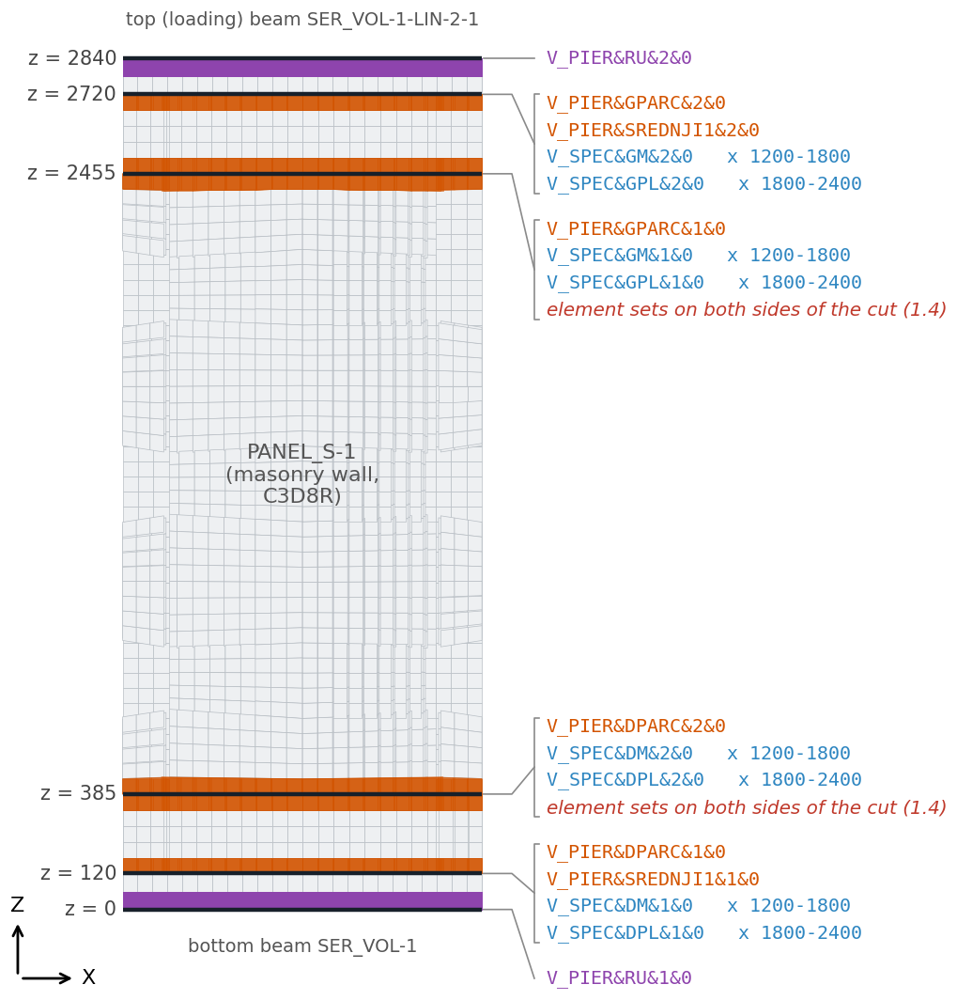
V_PIER SETs span the whole wall, the V_SPEC SETs its left or right half; RU
are the bottom of the bottom beam and the top of the loading beam. The two cuts in red italics are discussed in 1.4.Displacements and forces are written in the section axes x, y, z, which depend on the TYPE and ANGLE (Figure 3). For a pier, z is the vertical axis (normal to the horizontal cut) and ANGLE turns x and y about it; ANGLE 0 gives x = global X, y = global Y. For a spandrel the cut is vertical: z is the beam axis, x points down.
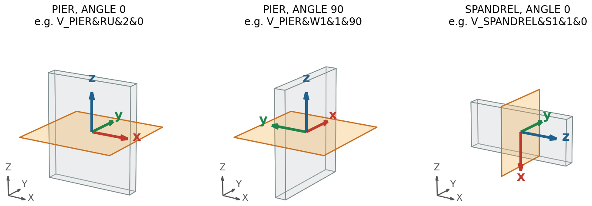
| columns | meaning (pier with ANGLE 0, wall in the X–Z plane) |
|---|---|
Ux Uy Uz | displacement of the section centre along x, y, z: Ux in-plane, Uy out of plane, Uz vertical |
fix fiy fiz | rotation about x, y, z [rad]: fiy is the in-plane rotation (bending), fiz the twist |
Fx Fy Fz | forces along x, y, z: Fx in-plane shear, Fy out-of-plane shear, Fz normal (axial) force |
Mx My Mz | moments about x, y, z: My in-plane bending moment, Mx out-of-plane bending, Mz torsion |
V_PIER&RU&2&0 (elements below
the cut) gives Fz = −34.8 kN and a peak Fx = +23.8 kN, the base section
V_PIER&RU&1&0 (elements above the cut) Fz = +48.4 kN and Fx = −23.7 kN:
both are compression and the same shear (the base also carries the self-weight). Put the element sets on the same side for all sections of a
kind, or correct the sign in the post-processing (e.g. "factor": -1 of a curve, chapter 4).The element set must contain elements of one side only. If it holds the elements of both sides, the
forces of the two sides cancel and the section reports nearly zero. The displacements of such a SET are still
correct, because they only use the nodes. Both scripts check this: prepare_model_for_export.py in the
model before the analyses (1.6), and the export for every SET it exports – a WARNING line in its log, a summary
at the end of the log and a message box. For the benchmark:
WARNING: 6 SET(s) have elements on BOTH sides of the cut - their exported forces
are wrong (about zero), the displacements are correct:
V_PIER&DPARC&2&0, V_PIER&GPARC&1&0, V_SPEC&DM&2&0, V_SPEC&DPL&2&0, V_SPEC&GM&1&0, V_SPEC&GPL&1&0
Fix the element sets (elements of one side only, see 1_model_preparation/README.md).
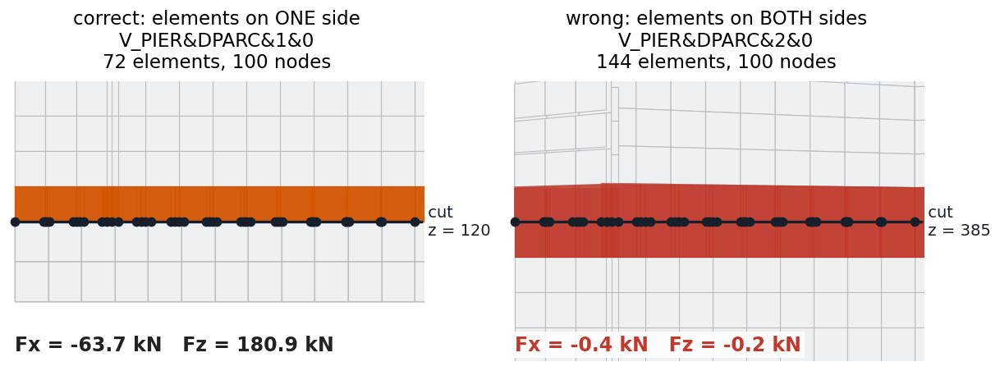
SHEAR_KEY_S_FR05_EX_172699. Left: the cut at
z = 120 lies on the boundary of the wall; the SET has the elements of one side. Right: the cut at
z = 385 lies on a partition face inside the wall; the SET has the elements of both sides and gives
Fx = −0.4 kN instead of about 64 kN.In the benchmark this concerns the SETs at z = 385 and z = 2455 (Figure 2): they were made as geometry sets of partition faces inside the wall, and Abaqus puts the elements of both sides of such a face into the set. Checklist for every SET:
Abaqus/CAE writes a SET with nodes and elements under one name in two ways. Both were checked with
Abaqus/CAE 2021, and both give an *Nset and an *Elset of that name in the input file:
V_PIER&DPARC&1&0,
type Geometry, select the face of the cut, Done.Abaqus stores the nodes of the face and the elements next to it. This is correct only if all those elements are on one side, i.e. the face is on the boundary of the part instance (like the faces between the wall and the beams in the benchmark). For a face inside a part use b).
cut_nodes, type Node: select the nodes of the cut
(easiest in a view looking along the cut, with a box selection, and with a display group showing only the
region: Tools > Display Group).cut_elements, type Element: select the layer of
elements on one side of the cut.>>> button left of the message area below the viewport):a = mdb.models['Model-1'].rootAssembly a.SetByBoolean(name='V_PIER&DPARC&2&0', operation=UNION, sets=(a.sets['cut_nodes'], a.sets['cut_elements']))
Repeat for every section (replacing cut_nodes and cut_elements). The helper sets do not
contain a section TYPE and are ignored by the export; delete them at the end if you like.
| field output variable | needed for |
|---|---|
U | displacements and rotations of the sections |
NFORC | section forces (both the free-body cut and the NFORC method) |
UR | rotation of shell sections about their own line (shell models only) |
e.g. DAMAGEC, DAMAGET, PEEQ, S | the variables of the pictures |
More output frames give more points on the curves and more frames to choose for the pictures.
1_model_preparation/prepare_model_for_export.py (Abaqus/CAE, model database open) lists the
section SETs of one or all models, checks their names and whether the element set of every SET with forces lies
on one side of the cut (the model must be meshed); optionally it sets the variables of the field output
request F-Output-1 (FIELD_OUTPUT in its INPUT block) and creates surfaces
SURF_<SET> for the earlier scripts and videos (not needed by the current export).
convert_models_to_explicit_EXAMPLE.py is a recorded example of converting the benchmark models to
Abaqus/Explicit; record the same actions for your own model and use it as a template.
Both scripts of 2_run_analyses run in Abaqus/CAE with the model database open
(File > Run Script...). The ODB files are written to the work directory (File > Set Work Directory...).
| workflow | script | runs |
|---|---|---|
| A – pushover analyses | run_pushover_jobs.py | the chosen models at every vertical force |
| B – parameter study | run_parameter_study.py | the models with every value of a contact or CDP-material parameter |
For every chosen model and every vertical force the script sets the force, creates the job
<model>_EX_<force> and submits it, a given number of analyses at a time, each on a given
number of cores. A dialog shows the INPUT block and lets you change it:
| Models (separated by commas; * and ? as wildcards, * = all): | BEND_* |
| Vertical forces (separated by commas; empty = as in the model): | 34272, 172699, 360000 |
| Analyses at the same time: | 2 |
| Cores per analysis: | 4 |
Figure 5. First dialog (Abaqus’ own input dialog; the texts are those of the script, the values typed by the user).
| field | meaning |
|---|---|
| Models | model names of the open .cae, separated by commas; * and ? as wildcards
(not case sensitive): * = all models, BEND_* = all models starting with BEND_ |
| Vertical forces | one analysis per force, in the force unit of the model; the concentrated force
VERT_FORCE gets cf3 = -force (downwards) in the steps VERT and HOR.
Empty: the models are run with the force they have (job name <model>_EX). |
| Analyses at the same time | the script submits this many analyses; before the next one it waits for the oldest running analysis (analyses finished meanwhile also free their place) |
| Cores per analysis | numCpus and numDomains of every job. Analyses at a time
× cores should not exceed the cores (and licence tokens) of the computer. |
A second dialog lists what will be done and asks before anything in the model is changed:
Figure 6. Confirmation: BEND_NOkey_S_FR07_EX_34272.odb already exists and is skipped.
Progress goes to run_pushover_jobs_log.txt in the work directory:
2026-11-12 10:15:43 skipped (BEND_NOkey_S_FR07_EX_34272.odb exists): BEND_NOkey_S_FR07_EX_34272
2026-11-12 10:15:44 submitted: BEND_NOkey_S_FR07_EX_172699 (1 running)
2026-11-12 10:15:46 submitted: BEND_NOkey_S_FR07_EX_360000 (2 running)
2026-11-12 10:15:46 waiting for BEND_NOkey_S_FR07_EX_172699
2026-11-12 11:02:17 finished: BEND_NOkey_S_FR07_EX_172699 (COMPLETED)
2026-11-12 11:02:19 submitted: BEND_key_S_FR05_EX_34272 (2 running)
...
2026-11-12 12:31:05 DONE: 5 submitted, 1 skipped, 0 failed - still running: BEND_key_S_FR05_EX_172699,
BEND_key_S_FR05_EX_360000 (see the Job Manager)
WAIT_AT_END = True also waits for them).<job>.odb or <job>.lck exists are skipped: run the script again
to continue an interrupted series; delete the ODB of a failed analysis to repeat it.LOAD_NAME, LOAD_STEPS, the job name pattern JOB_NAME,
JOB_SETTINGS (memory, explicit precision, ...), SUBMIT = False (only write the input
files <job>.inp, e.g. for another computer) and ASK = False (no dialogs, e.g.
abaqus cae noGUI=run_pushover_jobs.py).For every model and every value of the studied parameter the model is changed, a job is created and submitted. The study, the models and the values are set in the INPUT block:
STUDY = "material" # INPUT: "contact" | "material" MODELS = ["BEND_NOkey_S_FR07"] # INPUT: models of the open .cae to run JOB_PREFIXES = None # INPUT: None = the model names; or one prefix per model # -- contact CONTACT_PROPERTY = "Simple_contact" # interaction property of the model CONTACT_FRICTION = 0.5 CONTACT_DAMPING = [0, 0.0001, 0.001, 0.01] CONTACT_PRESSURE = [1, 5, 10, 100, 1000] # exponential pressure-overclosure # -- material MATERIAL_NAME = "BETON" # material of the model that gets the CDP data # -- jobs SUBMIT = True; JOBS_AT_ONCE = 2; CORES_PER_JOB = 4
| STUDY | changed in the model | job name |
|---|---|---|
contact | interaction property: friction, exponential pressure-overclosure, damping (every damping × every pressure) | <prefix>_Damping_<d>pressure<p> |
material | material BETON: elasticity and the CDP tables, one job per
material of material_CDP | <model>_MAT_<material> |
Skipping of finished jobs, analyses at a time, cores and SUBMIT = False work as in workflow A; the
log file is run_parameter_study_log.txt. A new kind of study is added in chapter 6.1.
The material study reads concrete damaged plasticity (CDP) materials from the folder
2_run_analyses/material_CDP, given in one of two ways:
| input folder | format |
|---|---|
A_Material_input_indirect | one line per material, tab separated:
name E v s_max e_smax e_u (not used) Sigma_T GFI. The compression curve follows the
Eurocode formula σ = s_max (kη − η²) / (1 + (k − 2)η), the tension is given by the
tensile strength and the fracture energy (Abaqus type GFI). |
A_material_input_direct | one text file per material with the tables themselves, e.g.
calibrated in a spreadsheet (layout: Example_direct.txt; the layout is checked). |
# A_Material_input_indirect/Example_EC_materials.txt (made-up example values)
Example_EC_C20 30000 0.2 20 0.002 0.0035 0.06 2.0 0.1
Example_EC_C30 33000 0.2 30 0.0022 0.0035 0.07 2.9 0.13
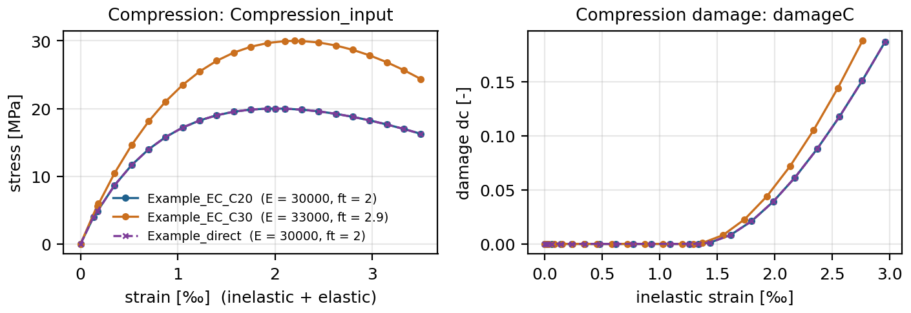
Example_direct was made from the same values as Example_EC_C20, so the
two curves coincide. Run a material script on its own (python) to check new input.Copy everything whose name starts with A_ from 3_export_and_image_export into the
folder with the ODB files (or anywhere, and choose the ODB folder in the dialog):
Benchmark_wall\ A_1_Export_Auto.py step 3: section export A_2_Image_save_view.py step 4: save a picture (chapter 4) A_2_Image_export_Auto.py step 4: images and curves (chapter 5) A_IMPORT_additional_functions\ library - must stay next to the scripts SHEAR_key_S_FR05_EX_34272.odb SHEAR_key_S_FR05_EX_172699.odb ...
Run A_1_Export_Auto.py with File > Run Script... in Abaqus/CAE or Viewer. The settings dialog
opens with the settings of the last export:
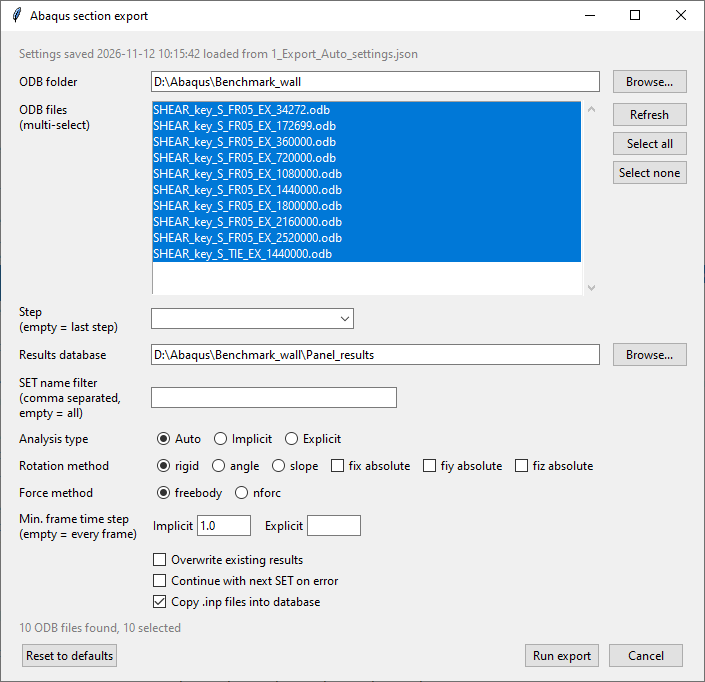
| field | meaning |
|---|---|
| ODB folder, files | all ODB files of the folder are selected; multi-select with Ctrl / Shift |
| Step | empty = the last step of each ODB (e.g. HOR) |
| Results database | folder of the results (default Panel_results next to the script) |
| SET name filter | only SETs containing one of these texts, e.g. RU, DPARC; empty = all |
| Analysis type | Auto detects implicit / explicit per ODB |
| Rotation method | rigid: rigid-body fit, valid for large rotations; angle, slope: regression plane (moderate / small rotations). absolute: orientation instead of the change from the start |
| Force method | freebody: Abaqus free-body cut; nforc: sum of NFORC by the script (same result, see 3.4) |
| Min. frame time step | keep a frame only if it is at least this much step time after the last kept one (implicit default 1.0); empty = every frame |
| Overwrite, Continue, Copy .inp | re-export existing sections; go on after a failing SET; copy the input file of each job into the database |
Run export saves the settings and starts. Sections already in the database are skipped unless
Overwrite is ticked. Without the dialog (USE_GUI = False) the export also runs in batch mode:
abaqus cae noGUI=A_1_Export_Auto.py (the 16 sections of the example take 13 s).
For every ODB and every SET, frame by frame:
Ux Uy Uz fix fiy fiz) of the section from the displacements
U of its nodes: the rigid-body motion that fits the nodes best (also correct for large
rotations), resolved in the section axes. Rotations are relative (change from the undeformed state) unless
absolute is ticked.Fx Fy Fz Mx My Mz) acting on the element set at the cut nodes, in the section axes,
about the area-weighted centre of the cut: by an Abaqus free-body cut (default), or by summing the element nodal
forces NFORC directly from the ODB.The results are text files in one folder per SET and job. The database of the example:
Panel_results\ baza sadzaj liste.txt list of the exported jobs V_PIER&RU&2&0\ Attributes.json centre and size of the cut SHEAR_KEY_S_FR05_FORCE_34272\ Section_dataIIIIV_PIER&RU&2&0IIIISHEAR_KEY_S_FR05_FORCE_34272.txt V_PIER&RU&1&0\ ... 16 SET folders
# Section_dataIIIIV_PIER&RU&2&0IIIISHEAR_KEY_S_FR05_FORCE_34272.txt (first rows of 53) Time,frameId,Ux,Uy,Uz,fix,fiy,fiz,Fx,Fy,Fz,Mx,My,Mz, 0.0,0,0.0,0.0,-0.0416,0.0,0.0,0.0,0.002,5.348,-34635.2,823195.5,-1552.0,-24.6, 1.0,1,0.0167,0.0,-0.0416,0.0,0.0,0.0,755.6,5.554,-34636.3,823403.7,-1070320.0,15537.6, 2.0,2,0.0591,0.0,-0.0416,0.0,0.0,0.0,2344.1,5.430,-34637.8,823233.0,-3316900.0,48613.2, # Attributes.json {"DimensionZ": 0.0, "DimensionX": 1200.0005, "DimensionY": 480.0, "CoordZ": 2839.9998, "CoordY": 19.9998, "CoordX": 1800.0002}
Values are in the units of the model (here N, mm, rad, Nmm; numbers shortened). Time is the step time, frameId the position of the frame in the step.
Three checks, from quick to thorough:
section_forces.py of the library on its own with "METHOD": "compare" in its
DEMO_SETTINGS; it prints both and their differences. Figure 9 shows the result for the example.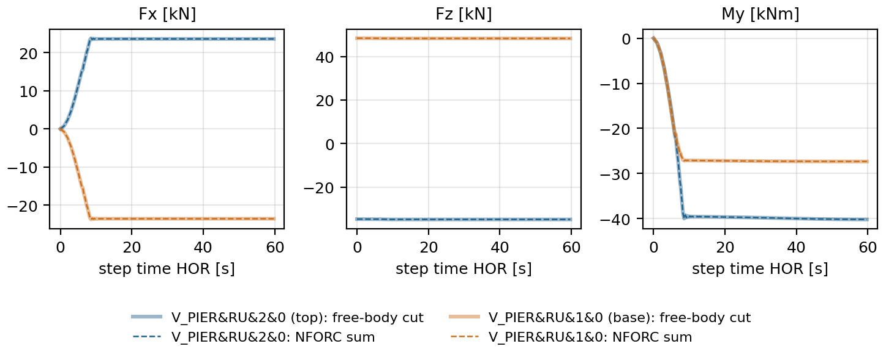
Pictures are set up once in Abaqus/Viewer as usual, and saved as a view that the image export (chapter 5) replays for every ODB and frame.
A_2_Image_export_Auto.py.| Picture name - view, or view__variable: | Front__DAMAGET |
| Frames of this view (empty = unchanged; 5 | all | last | every 3 | 0, 25, -1 | times 1.5, 3.0; default): | all |
| Contour limits (empty = as shown in Abaqus; auto | 0, 0.5 | auto, 1 | max 0.1 | min 0): | 0, 1 |
| Curves of the export (empty = unchanged; edit = choose sections and variables; on; off): | edit |
Figure 10. The dialog of A_2_Image_save_view.py (Abaqus’ own input dialog; texts as in the script).
| field | meaning |
|---|---|
| Picture name | Front: view “Front” with the variable shown now;
Front__DAMAGET: view “Front”, variable named “DAMAGET”. Saving the same view with
another variable adds the variable; camera etc. are updated. |
| Frames | frames of this view: 5 (evenly spread), all, last,
every 3, 0, 25, -1 (positions), times 1.5, 3.0 (step times),
default (FRAMES of the settings); empty = unchanged |
| Contour limits | of this picture (view + variable): empty = as shown in Abaqus (fixed values or
automatic are read from the session), auto, 0, 0.5, auto, 1,
max 0.1, min 0. Two views of one variable can have different limits. |
| Curves | edit opens the curve dialog (Figure 11), on / off
switches the curves of the export; empty = unchanged |
What is stored: camera, section cuts, edges, render style, deformation scale, contour settings, legend, title,
triad, background, plot state, variable and limits – read from the session; the display group is taken from
this session’s abaqus.rpy (Abaqus cannot report it otherwise). A preview PNG is saved in
Panel_images/_view_previews.
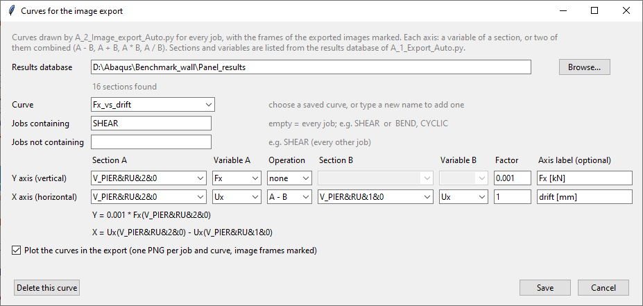
edit): the sections and variables are
listed from the results database of chapter 3. Shown: the curve “Fx_vs_drift” with
Y = 0.001 × Fx of the top section (kN) and X = Ux of the top minus Ux of the base
section, for every job whose name contains SHEAR.<view>__<variable>, then run A_2_Image_export_Auto.py with
MODE = "capture"; it reads the views from abaqus.rpy. Plug-ins button: copy the two files
of optional_abaqus_plugin to C:\Users\<name>\abaqus_plugins and restart Abaqus;
Plug-ins > Image export > Save current view... then runs the script of the ODB’s folder.Run A_2_Image_export_Auto.py (File > Run Script..., or abaqus cae noGUI=A_2_Image_export_Auto.py).
It exports every ODB × every view × its variables × its frames and draws the curves of every job.
The first lines of its log list what will be done:
Views : Front [default], Front_fixed [last]
Variables : S_Min_Principal, U1
Frames : default = 4 evenly spread | image size: [1200, 800]
Limits : Front S_Min_Principal automatic
Limits : Front U1 min 0.0 (fixed) / max 20.0 (fixed)
Limits : Front_fixed S_Min_Principal min -10.0 (fixed) / max 0.0 (fixed)
Curve : Fx_vs_drift: Y = 0.001 * Fx(V_PIER&RU&2&0),
X = Ux(V_PIER&RU&2&0) - Ux(V_PIER&RU&1&0) (jobs all)
...
step HOR: 4 of 153 frames -> [0, 51, 101, 152]
DONE in 0.1 min: 9 new image(s), 0 failed ODB(s)
Panel_images\ SHEAR_KEY_S_FR05_FORCE_34272\ one folder per job _curve_Fx_vs_drift.png _curve_Fx_vs_drift.csv U1\Front\f0000_t0.png f0051_t21.7527.png f0101_t40.3361.png f0152_t59.7221.png S_Min_Principal\Front\... <variable>\<view>\f<frame>_t<step time>.png S_Min_Principal\Front_fixed\f0152_t59.7221.png
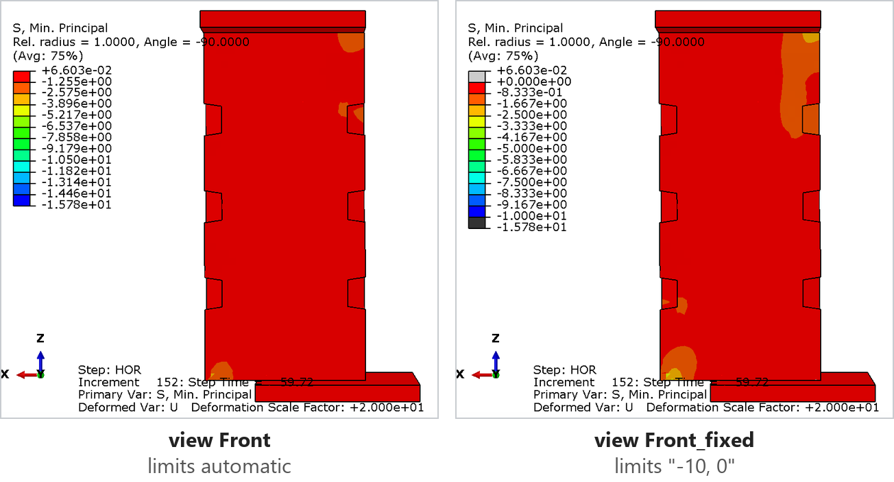
-10, 0 (“Front_fixed”) – limits belong to the picture (view + variable).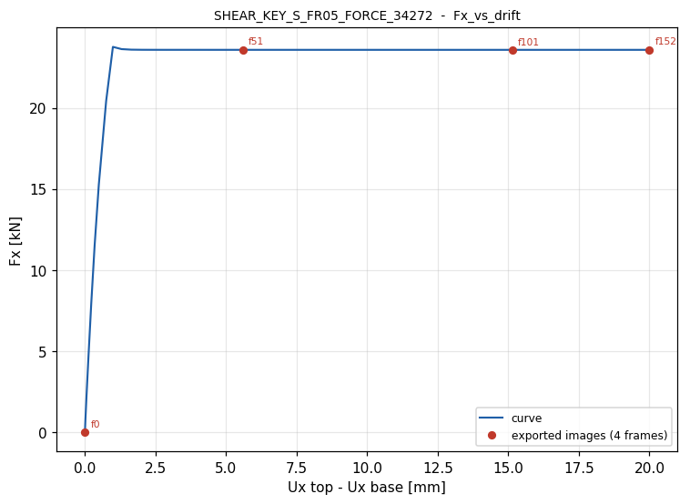
_curve_Fx_vs_drift.png of the example: the 4 frames of the images are
marked with their number (f51 = the images f0051_t21.7527.png).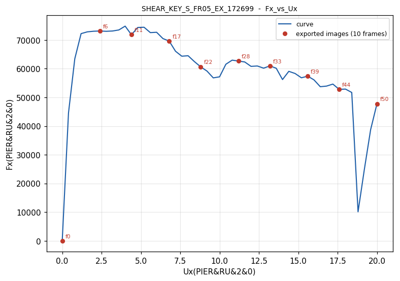
SHEAR_KEY_S_FR05_EX_172699), 10 image frames.Next to each PNG a CSV file holds the points and the image frames, for use in a spreadsheet:
Time,Ux top - Ux base [mm],Fx [kN],image frames 0.0,0.0,2.00220942497253e-06,f0 1.0,0.01671745441854,0.755562316894531, 2.0,0.0591462291777134,2.34408325195313,
2_Image_export_settings.json;
copy it to another folder to export there with identical settings.FRAMES (all views without own frames): {"MODE": "uniform", "COUNT": 10}, or short text as in
the Save view dialog. IMAGE_SIZE: e.g. [1200, 800] pixels; None = as on screen.OVERWRITE = False), so an interrupted export continues;
ZIP_PER_JOB = True packs every job into one ZIP file (faster to copy).ADD_FRAMES_AROUND_PEAK = True also exports the peak of the first curve and the points at
BEFORE_PEAK / AFTER_PEAK × peak (e.g. 75 % before and 80 % after the peak).The scripts are plain Python 2.7 (Abaqus 2021) and are meant to be adapted. Three typical changes:
In run_parameter_study.py a study is two functions: the cases (job name ending and value) and the
change of the model. Example: a study of the friction coefficient of the contact:
def change_friction(model, mu): prop = model.interactionProperties[CONTACT_PROPERTY] prop.tangentialBehavior.setValues(formulation=PENALTY, table=((mu, ), ), maximumElasticSlip=FRACTION, fraction=0.005) def cases_friction(): return [("_FR%s" % str(mu).replace(".", ""), mu) for mu in (0.4, 0.5, 0.6, 0.7)] STUDIES = {"contact": (cases_contact, change_contact), "material": (cases_material, change_material), "friction": (cases_friction, change_friction)} # then STUDY = "friction"
Record the change once in Abaqus/CAE and copy the command from abaqus.rpy into the change function.
Section types are one list in A_IMPORT_additional_functions/section_definitions.py (the first
matching token wins):
SECTION_TYPES = [
SectionType("V_PIER", ("V_PIER", "V_SPEC"), "volume", "PIER", True),
...
# new: SETs named V_WALL&...
SectionType("V_WALL", ("V_WALL",), "volume", "PIER", True),
]
# name, tokens in the SET name, geometry ("volume" | "shell" | "point"),
# axes ("PIER" | "SPANDREL" | None), forces exported (True / False)
Run the module on its own (python section_definitions.py) to see how example names are classified.
Also add the token to SECTION_TOKENS of prepare_model_for_export.py so that the check lists
the new SETs.
The results database is plain text, so any Python (or a spreadsheet) can process it, without Abaqus. Example: the peak shear of the top section and the displacement at the peak, for every job:
import os, glob, csv db, section = r"D:\Abaqus\Benchmark_wall\Panel_results", "V_PIER&RU&2&0" for path in sorted(glob.glob(os.path.join(db, section, "*", "Section_data*.txt"))): rows = list(csv.DictReader(open(path))) peak = max(rows, key=lambda r: abs(float(r["Fx"]))) job = os.path.basename(os.path.dirname(path)) print("%-32s Fx max = %8.1f kN at Ux = %6.2f mm (t = %s)" % ( job, float(peak["Fx"]) / 1000, float(peak["Ux"]), peak["Time"]))
SHEAR_KEY_S_FR05_FORCE_34272 Fx max = 23.8 kN at Ux = 0.99 mm (t = 8.5625)
Inside the image export, curves (chapter 4) cover most needs; pushover_curve.py reads the database in
the same way and can be extended (e.g. a new operation in OPERATIONS).
| module (A_IMPORT_additional_functions) | contents |
|---|---|
odb_tools.py | opening ODBs, frame selection (frame sync), sets, field values, logging |
section_definitions.py | SET name → section type and axes |
section_geometry.py | regression plane, rigid-body fit, rotations, cut centroid |
section_displacements.py | displacements and rotations of the sections |
section_forces.py | free-body cut and NFORC forces (stand-alone: compare both) |
database_io.py | results database (folders, file names, columns) |
export_settings.py, export_gui.py | remembered settings, settings dialog |
image_export.py, rpy_views.py, view_snapshot.py | replaying views, reading abaqus.rpy, snapshot of the session |
pushover_curve.py | curves from the results database, curve dialog |
| message or symptom | cause and remedy |
|---|---|
| Folder A_IMPORT_additional_functions not found next to this script | copy the folder together with the A_ scripts (3.1) |
| No .odb files found in ... | choose the ODB folder in the dialog, or set ODB_FOLDER |
| WARNING ... elements on BOTH sides of the cut, or a section with forces near zero | the element set holds elements of both sides of the cut: make it again with the elements of one side (1.4, 1.5) |
| Forces of two sections have opposite signs | their element sets lie on different sides of the cut (1.3) |
| SET ... must look like TYPE&LABEL&INDEX&ANGLE / INDEX and ANGLE must be numbers | rename the SET (1.2); helper sets must not contain PIER, SPEC, SPANDREL, DRIFT or SRIFT |
| Abaqus seems to hang during an export | open the *_log.txt file next to the script: it shows the current ODB, SET and frame |
| Model(s) not in the open .cae / no model 'X' | model name or wildcard does not match (2.1); names are listed in the message |
| model ... has no load VERT_FORCE | set LOAD_NAME / LOAD_STEPS of run_pushover_jobs.py to the names of your model |
| the dialog could not be shown (noGUI) | batch runs (abaqus cae noGUI=...) need ASK = False / USE_GUI = False |
| Curve: section ... is not in the database | run the section export first (chapter 3), or choose the results database in the curve dialog |
| An image looks different from the screen | display group or a setting was not stored: save the view again after setting it up; check the preview in Panel_images/_view_previews |
| A change in a library file has no effect | restart Abaqus (6.4) |
The videos were recorded with the earlier version of the scripts: the modelling (SETs, naming, local axes)
is the same; script names and input differ (no Input_file.txt any more – the scripts have an INPUT
block, dialogs and remembered settings).
| video | link |
|---|---|
| How the scripts work – overview, from a new model to extracted results | https://youtu.be/g9gw_EXEesM |
| Creation of the benchmark model | https://youtu.be/stwDfm0-Hc0 |
| Cross-section naming and local axes (chapter 1) | https://youtu.be/6BFI6Eegp64 |
| Export script (chapter 3) | https://youtu.be/nRnF_rlyfsg |
| Displacement and force conversion modification demo | https://youtu.be/nNw8NbOuac0 |
| Automated job running (chapter 2) | https://youtu.be/iR5NVptAlkw |
| Adding a custom post-processing function (chapter 6) | https://youtu.be/oXEkcqDdTa8 |
| Entire playlist | https://www.youtube.com/playlist?list=PLjdnR7Fv3RGjCVFS0ykvkd6-2jo0IHgPl |
README.md of the repository and of every step folder: short reference of the scripts.docs/flowchart: flowchart and short report of steps 3 and 4 (PDF, PNG, SVG, HTML, Visio, draw.io).readme.txt: the texts of the earlier README files.This tutorial: docs/tutorial/source/tutorial.html; the PDF is
rebuilt with python build_pdf.py in that folder (Microsoft Edge and PyMuPDF).